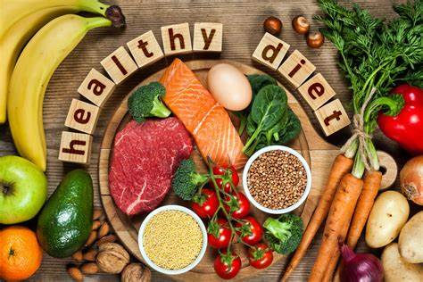

Physical Fitness
Updated on Dec 7,2023
Physical fitness refers to a person's ability to perform physical activities and tasks effectively, with enough strength, endurance, flexibility, and coordination. It encompasses overall health and well-being, indicating that an individual is in good shape, both physically and mentally. Being physically fit means having the capability to engage in various activities, maintain a healthy body weight, and reduce the risk of health problems. It is achieved through regular exercise, a balanced diet, and lifestyle choices that promote physical health.
Visit wikipediaSleep and Relaxation
Updated on Nov 2,2023
Sleep is a state of reduced mental and physical activity in which consciousness is altered and sensory activity is inhibited to a certain extent. During sleep, there is a decrease in muscle activity, and interactions with the surrounding environment.While relaxation is the state of reduced tension,boyh physically and mentally.It involves intentional efforts to release stress and achieve a sense of calmness and tranquility.Regular relaxation is important for overall well-being to enhance the quality of life.
Visit wikipediaNutrition and Healthy Eating
Updated on Oct 26,2023
Nutrition and Healthy eating food nourishes the body and gives the energy to get through each day.Healthy eating is fundamental to good health and is a key element in healthy human development,from the prenatal and early childhood years to later life stages. Healthy eating is equally important in reducing the risk of many chronic diseases.A healthy diet is a diet that maintains or improves overall health. A healthy diet provides the body with essential nutrition: fluid, macronutrients such as protein, micronutrients such as vitamins, and adequate fibre and food energy
Visit wikipediaMental health awareness
Updated on Nov 10,2023

Mental health is a state of mental well-being that enables people to cope with the stresses of life, realize their abilities, learn well and work well, and contribute to their community. It is an integral component of health and well-being that underpins our individual and collective abilities to make decisions, build relationships and shape the world we live in. Mental health is a basic human right. And it is crucial to personal, community and socio-economic development.Promotion and prevention interventions work by identifying the individual, social and structural determinants of mental health, and then intervening to reduce risks, build resilience and establish supportive environments for mental health.
Visit wikipediaHolistic Life
Updated on Nov 2, 2023
Holistic living is an approach in which the mind, body, and soul are taken care of to maintain a balance from within. It is an awareness mindset to take care of yourself intentionally.This means each of the individual parts when connected they are worth more than when they were separate. The four pillars of holistic wellbeing are physical, mental, emotional, and spiritual.Holistic living is a style of living where you nurture your mind, body, and spirit as you focus on your wellbeing, inside out. In this approach, it is believed that our mind and body are connected.
Visit wikipediaMeet the face behind the blog
Hello there!
Greetings,lovely souls!,I amKaviyarasan,the creater behind the"Health and wellness".Welcome to my corner of the internet where I share my passin for healthy lifestyle.
Popular Post
10 global health issues to track in 2021
In recent decades, WHO and partners have worked resolutely to end the scourge of polio, HIV, tuberculosis and malaria, and to avert epidemics of diseases like measles and yellow fever. COVID-19 set back much of this work in 2020. So in 2021 we will help countries get vaccines for polio and other diseases
Top 10-global-health-issues-to-track-in-2021The coronavirus (COVID‐19) pandemic's impact on mental health
One of the biggest global crises in generations, the COVID-19 pandemic has had severe and far-reaching repercussions for health systems, economies and societies. Countless people have died, or lost their livelihoods.
The COVID‐19 pandemic's impact on mental health